If you haven't noticed, this website is being constantly updated with my review on what is currently happening between me and skeld.net
skeld.net is in a shithole right now I'd say, most among us creators knows about what Arkatme did and even the modding community knows.
Arkatme scammed SilenceHD, towards a portion of his pay, as Silence and Arkateme agreed on 20 / 80, Ark only paid 400 for all of the creators SilenceHD recommended.
Click me for more information about this topic.
I joined skeld.net hoping to have some fun with modded among us, I joined and saw that staff applications
were closed 10 minutes ago. Thanks to Tyrant Lord, he opened it for me for 5 minutes. A week later I was
accepted into skeld.net.
Moderating skeld.net was a rush, it was full of people who wanted help and to game with others. I was later
promoted to Support. While being support I wanted to do a bit more with skeld after seeing it's flaws.
I recommended a discord bot to help but later was denied.
Being a Support, I did quite a lot to get myself promoted to Moderator, I decided to help as much as I can,
such
as changing nicknames, helping out with unhandled infractions, etc.
I even created an updated youtube video to help newcomers with skeld.net
After getting promoted to Moderator, I was hyped. I then took 2 hours handling unhandled infractions once
again.
I banned every name and person that was or is homophobic, racist, etc.. Renamed every person who advertised
nicks into something else.
After that, a week as moderator I found out that theres this "Admin" role, and saw channels that I
shouldn't
see (I didn't read them)
I then told Arkatme that I wanted to do something with skeld.net as I saw the decline in its inactivity.
I decided to do the discord bot that handled support, moderation commands, automod that carlbot couldn't catch
and such.
After that I decided to remodel the channels that felt needed to change or outdated.
I ASKED ARKATME'S PERMISSION TO DO THIS, DON'T THROW SOME BULLSHIT AT ME
I announced a few polls with the staff team, which was very much inactive during that time. Literally 1-3
reaction coming out from 13 staff members.
Moving on, the last task I did that promoted me to Community Manager was remodeling every channel basically.
It was my fault for advertising Apollo's Lounge, and I immediately stopped and apologized as Ark told me to
not
do it again
The main reason why I advertised Apollo's Lounge is because skeld.net was on the breach of dying. You could
see
the inactivity it had before I revived it. I wanted to make a community out of the remaining users it had
who
were active
The most of the staff team was dead when I was officially promoted to Community Manager.
Tyrant was inactive and made an announcement regarding his sickness and resignment.
I told him to get better and that another staff could take his place temporarily while he is away.
He ended up refusing and ended up resigning. In replace I ended up promoting SCP-049 to Sr. Moderator
Most of the staff team were inactive too, they even mentioned that they no longer have the courage to
moderate
skeld.net and resigned.
The others who havent taked in a month or more were demoted to Former Staff.
I joined NodePolus hoping to know SERVER-SIDE modding just to help out skeld.net after
Saghetti left. (Arkatme was the only developer)
Roobscoob helped me out a lot and learned a lot from him, although modding felt easier to code and much more
freedom than SERVER-SIDE mods
Ark dmed me about CLIENT-SIDE modding
Since he works for Socksfor1 I trusted him and thought he wanted to help me
Ark introduced me into Reactor which basically helps a fuck ton with the obfuscated mappings and more
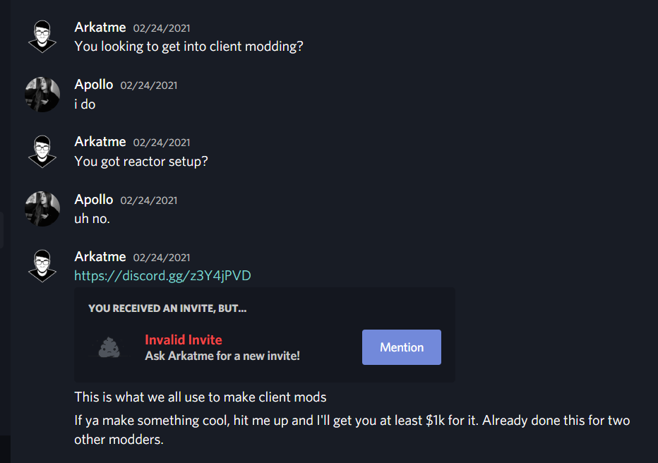
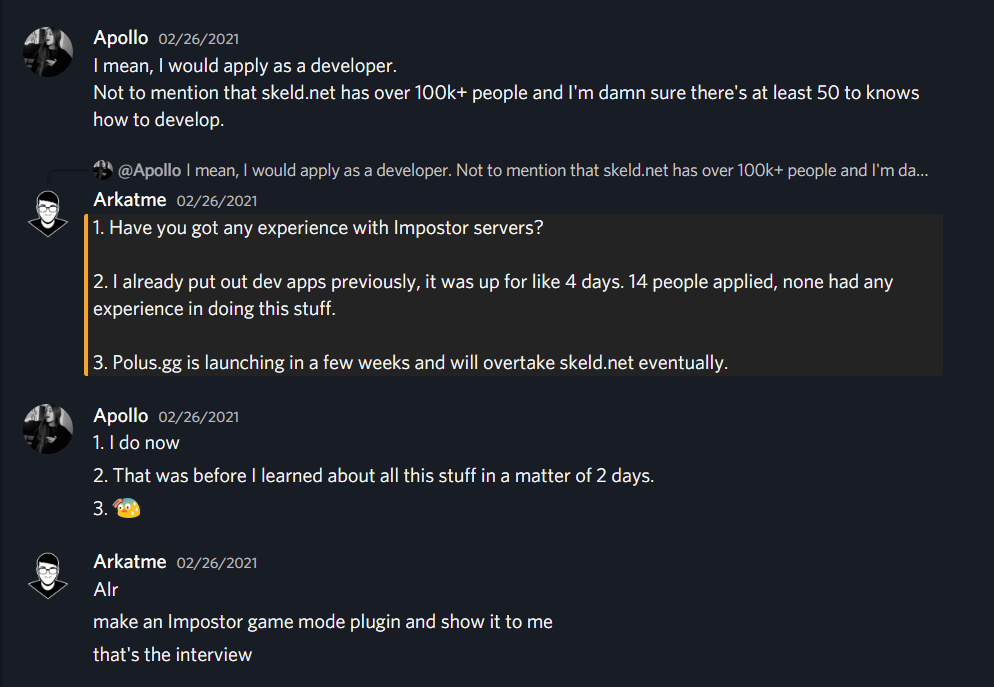
A week after I promoted the staffs, Arkatme decided to boot off SilenceHD from skeld.net
I agreed and mildly celebrated because he was really inactive after he reshaped skeld.net (SilenceHD basically
had adminstrator without actually doing anything with the server)
He was booted off skeld.net but I saw that he banned SilenceHD and questioned why he did that and he told me
that to watch skeld.net with any raids that could occur
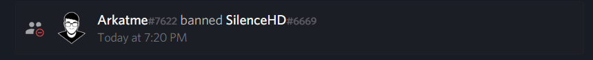
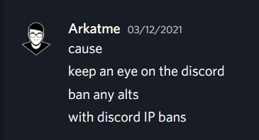
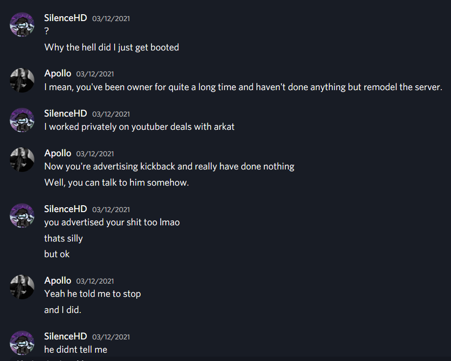
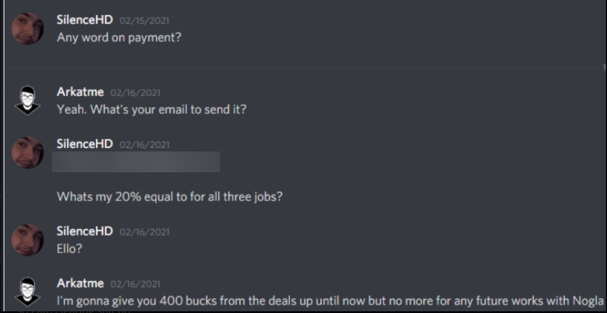
My experience throughout skeld.net was the best thing I've had in a while. I've met new friends, fans, strugglers with skeld, and more..
I left skeld.net peacefully, telling Arkatme that I wasn't going to do anything malicious to anything he has
given me. (and I hope he does the same back)
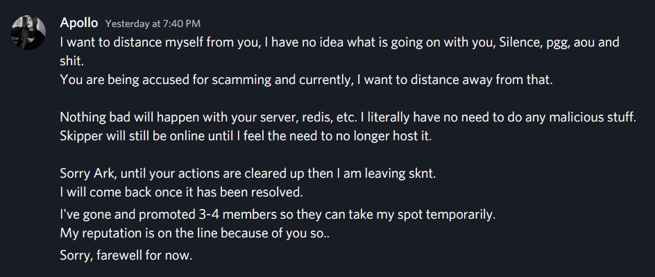
After waking up, Naleksuh banned me from skeld.net, why? Because he asked me to answer his
question of why I left skeld.net.
After telling him that I was going to play with my friends and said I was
busy, he then accused me of faking all of this shit. How pathetic can you be?
You really going to ban
me beacuse I won't answer your question?
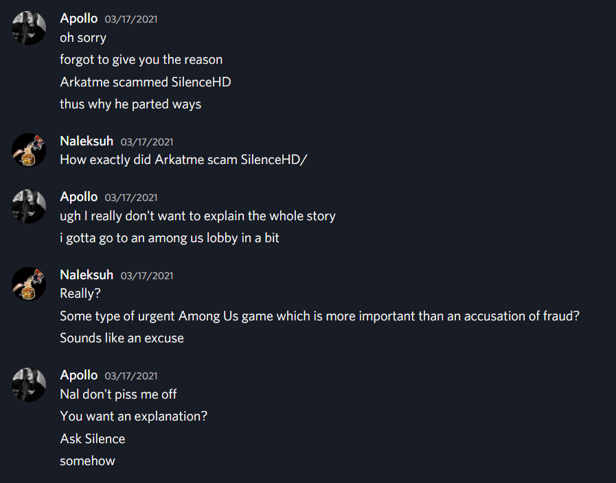
This is just me ranting and responding to the skeld.net staff team while they trash me behind my back
I dmed SilenceHD regarding the Discord Bot I offered in my early days of skeld.net
After that we futher talked about Silence asking Arkatme to take over skeld.net as he told me that he would make
me management.
Few days later, Silence dmed me about him buying skeld.net, along with asking me to put a few hundreds to the
fund.
In my perspective, this feels like a scam towards me. Note I am still 16 and as Silence asks me about funding
the purchase of skeld.net
Sent me over the line.. I didn't know SilenceHD as much, from what I saw in the public view I thought he was
some con artist.
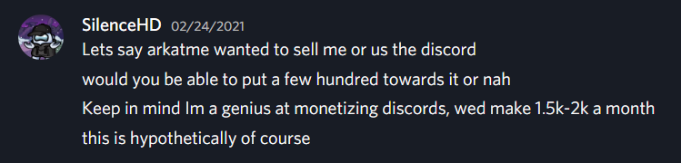
Today I joined skeld.net with an alt, searched up the keyword "Apollo" and reviewed every message from the past
24 hours
The amount of toxicity yall had towards me was insane. The audacity yall had with the revival of skeld.net
saying "it's no longer an among us server"
The staff and I agreed that we would make skeld.net a community server due to polus.gg having 8 developers and a
much more flexible SERVER-SIDE plugin
There are a few things I'd like to clear up with you.
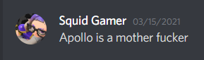
no u
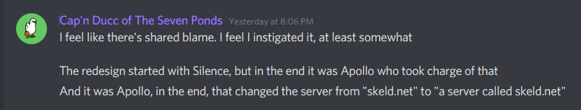
Really not sure why you're saying this. After I got promoted you and the rest of the staff became inactive
without any notice
skeld.net was dying and everyone can agree with that. I decided to take over and it worked.
We all agreed to make skeld.net a community server, you weren't there before of your inactivity, really isn't my
fault.
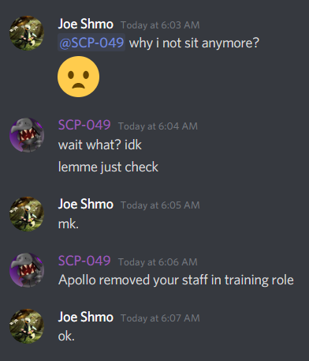
Pretty sure I didn't demote anyone, although if I did I am sorry.
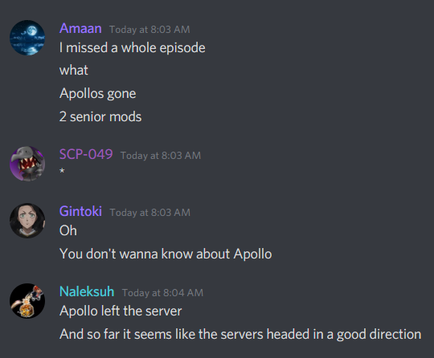
From what I've stated above, not with you as a moderator.
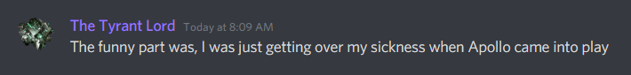
You said you were sick and you wanted to resign. You ended up resigning... Why say this now? How do I affect your job? Do you want to feel included with the other people shitting on me?
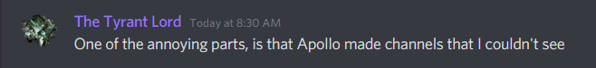
There were a few channel that were privated to Arkatme and I, guess what. It was those tutorial channels I've
made along with a #apollo-testing channel.
Sorry, do you want to feel included? Maybe try DMing me text time..
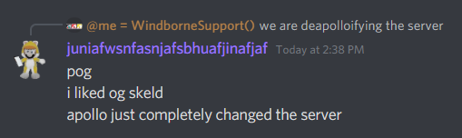
Well I hope this 142 lined page would clarify what the fuck I've been through
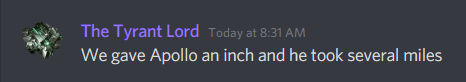
That serveral miles revived skeld.net had I not been there, it would be dead.
If you or anyone had a problem
with my changes why not tell me?
I never abuse my power unlike Nal (Unless im trolling ofc)
Is it easier to talk behind my back or what? lmao?
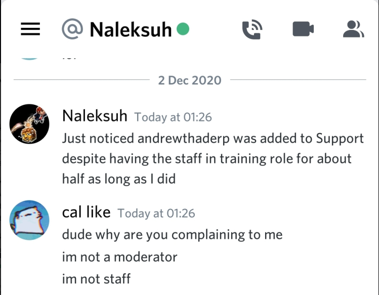
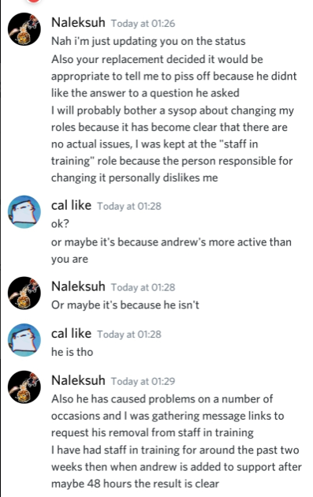
How entitled can you be, andrea was promoted because they haven't caused a fucking fit. (and you were the reason why they left the staff team too)
Unlike you, you were banned before and I never got to know you. And from what I've seen with your messages as staff..
You are the same as me, wanting to improve skeld.net, except you're highly fucking entitled and lose your
shit when someone denies your command.
Lowkey, you asked me to replace 5 bots that is fundemental for the server,
I can't believe you legit thought you can create a discord bot that outshines these 5 bots that are trusted and well maintained
by lots of ACTUAL developers
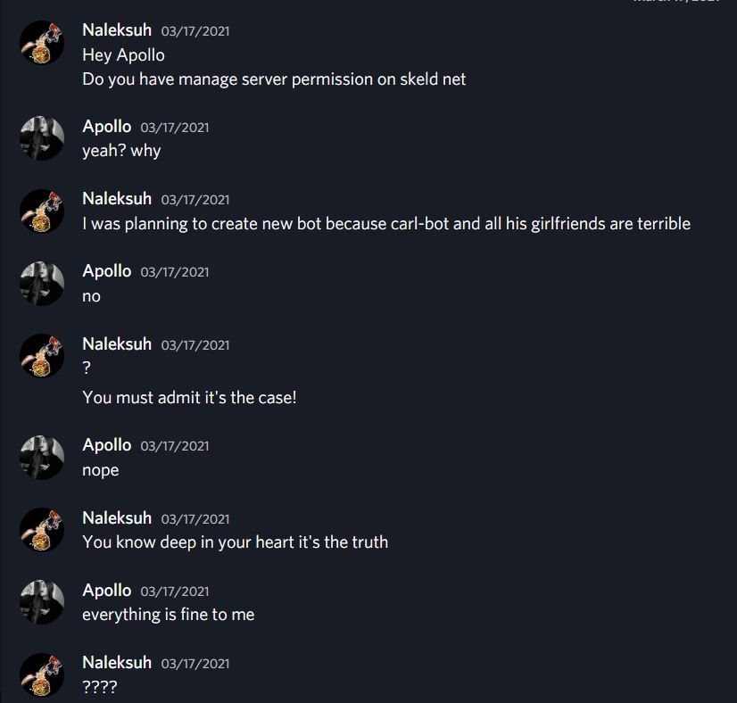